L’Aquila
Associazione 3:33
Associazione Culturale Residenti Centri Storici
Adesione Associazione
Per informazioni: info@3e33.it
Notizie ed Eventi
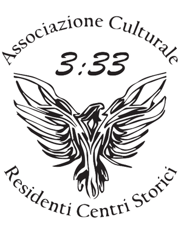
Convocazione assemblea straordinaria soci 2026
In ottemperanza alle norme statutarie dell’Associazione “Tre e Trentatré”, si comunica ufficialmente la convocazione della Riunione Annuale dei Soci per l’approvazione del bilancio e la discussione delle…
Convocazione assemblea soci 2025
In ottemperanza alle norme statutarie dell’Associazione “Tre e Trentatré”, si comunica ufficialmente la convocazione della Riunione Annuale dei Soci per l’approvazione del bilancio e la discussione delle…
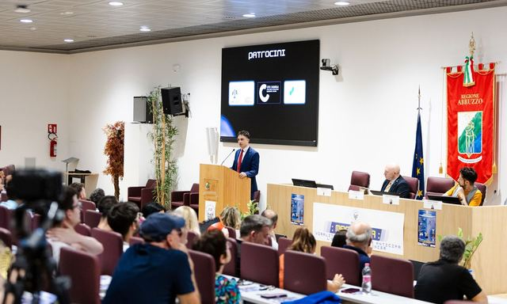
Magnotta: Viralità Spontanea che Anticipa l’Era degli Influencer – Evento
La Sala Ipogea dell’Emiciclo all’Aquila ha ospitato un evento culturale di grande interesse, “Magnotta: viralità spontanea che anticipa l’era degli influencer”. Organizzato dall’Associazione culturale 3:33…
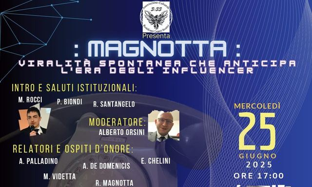
Magnotta: Viralità Spontanea che Anticipa l’Era degli Influencer – Annuncio evento
“Magnotta: Viralità Spontanea che Anticipa l’Era degli Influencer” è il titolo dell’evento culturale in programma il 25 giugno 2025 presso la sala Ipogea del palazzo dell’Emiciclo dell’Aquila, a partire dalle…

Masterclass 2025 – Ottavo seminario – Evento finale
Sabato 15 marzo 2025, si è celebrata nell’Aula Magna dell’IIS “d’Aosta” a L’Aquila la cerimonia di chiusura della terza edizione del progetto formativo MasterClass 2025, organizzato dall’Associazione Culturale…

Masterclass 2025 – Settimo seminario
Si è svolto sabato 1° marzo, presso il Palazzetto dei Nobili, il settimo incontro formativo del progetto MasterClass 2025, organizzato dalle associazioni culturali Residenti nei Centri Storici “3:33” e Centro…

Masterclass 2025 – Sesto seminario
Sesto appuntamento del progetto MasterClass 2025, organizzato dalle associazioni culturali Residenti nei Centri Storici “3:33” e Centro Studi La Meta con il patrocinio del Comune dell’Aquila e Ufficio…

Masterclass 2025 – Quinto seminario
La sala Calvitti della questura dell’Aquila ha accolto questa mattina il quinto degli otto incontri del progetto MasterClass 2025, iniziativa formativa promossa dalle associazioni culturali Residenti nei…

Masterclass 2025 – Quarto seminario
Il 1 febbraio si è tenuto presso il Centro Studi la “Meta” il quarto seminario del programma MasterClass 2025 organizzato dal Centro Studi “La Meta” ed Associazione Culturale Residenti nei Centri Storici…

Masterclass 2025 – Terzo seminario
Il giorno 18 gennaio, si è tenuto presso il Centro Studi “La Meta” il secondo seminario del programma MasterClass 2025 organizzato dal Centro Studi “La Meta” ed Associazione Culturale Residenti nei Centri…

Masterclass 2025 – Primo seminario
L’Associazione Culturale Residenti nei Centri Storici “3:33” e il Centro Studi La Meta hanno inaugurato la terza edizione di MasterClass 2025, un percorso formativo che continua a riscuotere grande successo e…

Masterclass 2025 – Secondo seminario
Il giorno 11 gennaio, si è tenuto presso il Centro Studi “La Meta” il secondo seminario del programma MasterClass 2025 organizzato dal Centro Studi “La Meta” ed Associazione Culturale Residenti nei Centri…
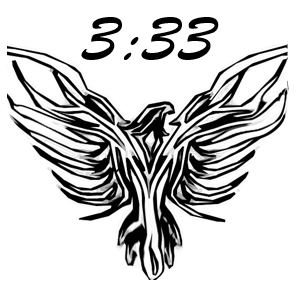
Convocazione assemblea soci 2024
In ottemperanza alle norme statutarie dell’Associazione “Tre e Trentatré”, si comunica ufficialmente la convocazione della Riunione Annuale dei Soci per l’approvazione del bilancio e la discussione delle…

Masterclass 2025 – Presentazione ITIS
La seconda edizione di MasterClass 2025 è stata brillantemente introdotta all’Istituto d’Istruzione Superiore Amedeo di Savoia Duca D’Aosta. Il progetto MasterClass 2025, ulteriormente arricchito rispetto alla…

Masterclass 2025
Benvenuti alla Masterclass 2025, un’iniziativa esclusiva dell’Associazione Culturale per i Centri Storici 3:33, dedicata a trasformare il panorama educativo di L’Aquila. Questo programma unico si immerge nel…
Proponiamo l’adozione tecnologica della Città dell’Aquila da parte di Elon Musk
L’Associazione Culturale Residenti nei Centri Storici “3:33” presenta una proposta innovativa volta a rendere L’Aquila il centro di un progetto pilota per rivoluzionare i centri storici. “Proponiamo l’adozione…

Masterclass 2024 – Seminario conclusivo e premiazione
Desidero ringraziare personalmente tutti gli studenti, i partecipanti, La preside M. Chiara Marola, l’Ass. Roberto Santangelo, Il Dir. Gen. Arta Abruzzo Maurizio Dionisio, il Dir. Gen. USRA Abruzzo…

Masterclass 2024 – Sesto seminario
Sabato 4 maggio, il Centro Studi La Meta a L’Aquila ha ospitato il sesto seminario del programma formativo MasterClass 2024, un’iniziativa promossa dall’Associazione Culturale Residenti nei Centri Storici 3:33…

Masteclass 2024 – Quinto seminario
Sabato 20 aprile, L’Aquila è stata teatro del primo evento in Abruzzo interamente dedicato alla Scuola Normale Superiore di Pisa, promosso e organizzato dall’Associazione Culturale Residenti nei Centri Storici…

Masterclass 2024 – Quarto seminario
Sabato 13 aprile si è svolto, presso la Questura dell’Aquila, il quarto incontro di MasterClass 2024, programma formativo promosso e coordinato dalle associazioni culturali Residenti nei Centri Storici “3:33”…

Masterclass 2024 – Terzo seminario
In occasione del quindicesimo anniversario del terremoto che ha colpito L’Aquila, si è tenuto presso la Sala Rivera di Palazzo Fibbioni il terzo seminario del programma MasterClass 2024 organizzato dal Centro…

Masterclass 2024 – Secondo seminario
Il secondo seminario del programma MasterClass 2024, ospitato ieri dall’Università degli Studi dell’Aquila, ha segnato un altro significativo passo avanti nella missione di promuovere e divulgare l’eccellenza…

Masterclass 2024 – Primo seminario
Con la realizzazione del primo dei sette seminari tenutosi sabato 16 marzo all’Emiciclo, parte ufficialmente la fase formativa del progetto MasterClass 2024. Il seminario inaugurale, intitolato “Esplorando…

Masterclass 2024 – Conferenza stampa e presentazione del corso
L’Associazione Culturale Residenti nei Centri Storici “3:33” e il Centro Studi La Meta annunciano con grande soddisfazione l’eccezionale risposta alla seconda edizione del progetto MasterClass, testimoniata da…

Masterclass 2024 – Presentazione ITIS
La seconda edizione di MasterClass 2024 è stata brillantemente introdotta all’Istituto d’Istruzione Superiore Amedeo di Savoia Duca D’Aosta. Il progetto MasterClass 2024, ulteriormente arricchito rispetto alla…

Masterclass 2024
Benvenuti alla Masterclass 2024, un’iniziativa esclusiva dell’Associazione Culturale per i Centri Storici 3:33, dedicata a trasformare il panorama educativo di L’Aquila. Questo programma unico si immerge nel…
Convocazione assemblea soci 2023
In ottemperanza alle norme statutarie dell’Associazione “Tre e Trentatré”, si comunica ufficialmente la convocazione della Riunione Annuale dei Soci per l’approvazione del bilancio e la discussione delle…
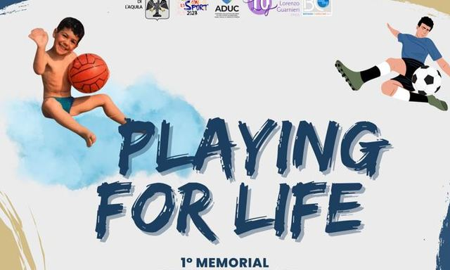
Associazione 3:33 sostiene e prende parte al “Playing FOR Life” – 1° memorial Giuseppe Magnifico
Il 16 e 17 Settembre 2023, la città di L’Aquila è stata protagonista di un momento di sport e riflessione grazie al torneo “Playing FOR Life” – 1° memorial Giuseppe Magnifico. L’Associazione 3:33 è lieta di…
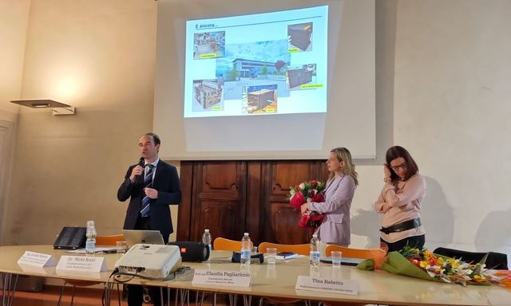
Masterclass 2023 – Ultimo appuntamento
Sabato 6 Maggio, nella magnifica cornice storica della Sala Rivera di Palazzo Fibbioni a L’Aquila, si è svolta la cerimonia di chiusura del progetto MasterClass 2023, ideato ed organizzato dal Centro Studi La…
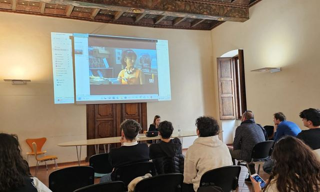
Masterclass 2023 – Sesto seminario
Si è svolto ieri, sabato 29 aprile, presso la Sala Rivera di Palazzo Fibbioni nel centro storico di L’Aquila, il penultimo degli otto seminari della prima edizione di MasterClass 2023. La master class dal…
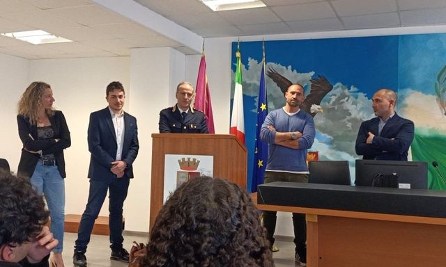
Masterclass 2023 – Quinto seminario
Si è svolto ieri, sabato 15 aprile, il quinto incontro del programma MasterClass 2023 presso la Questura di L’Aquila.L’evento, patrocinato dal Comune dell’Aquila ed interamente finanziato dall’azienda…
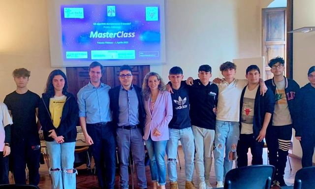
Masterclass 2023 – Quarto seminario
Si è svolto sabato 1 aprile il quarto degli otto seminari del programma MasterClass 2023 presso la Sala Rivera di Palazzo Fibbioni nel centro storico di L’Aquila. L’evento, patrocinato dal Comune dell’Aquila…
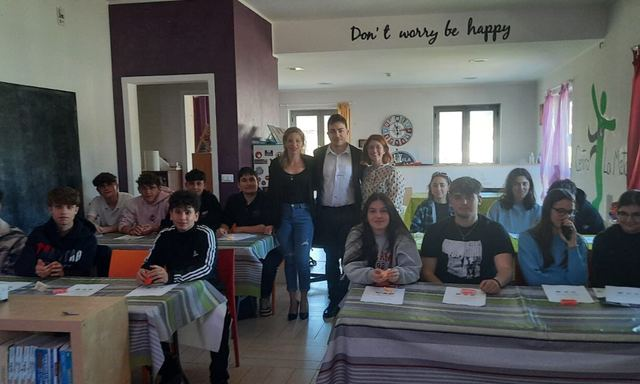
Masterclass 2023 – Terzo seminario
Si è svolto oggi il terzo seminario della Masterclass 2023 presso il Centro Studi La Meta Ripetizioni e Doposcuola dal titolo “Dalla topologia alla teoria dei nodi”. I ragazzi e le ragazze hanno conosciuto e…
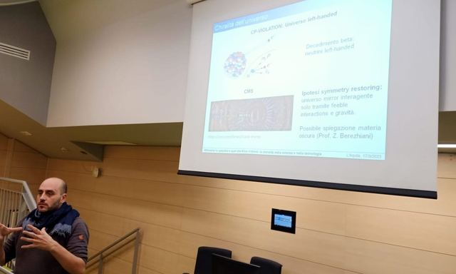
Masterclass 2023 – Secondo seminario
Lo scorso venerdì 17 marzo alle ore 15:00 presso la Facoltà di Scienze dell’Università degli Studi dell’Aquila a Coppito, si è tenuto il secondo appuntamento del progetto MasterClass 2023, dove il Prof…
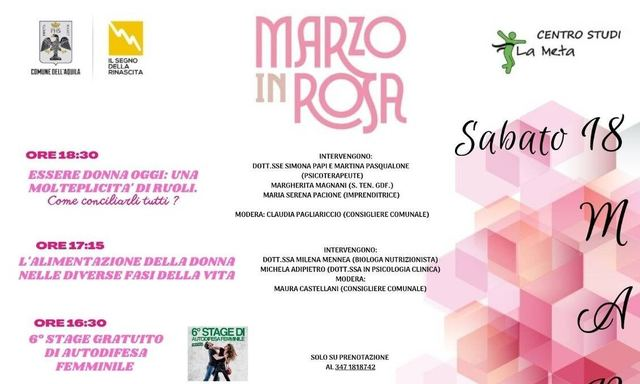
Marzo in rosa – “Un momento tutto mio”
Nell’ambito del programma “Marzo in rosa” dedicato alla festa della donna organizzato dal Comune dell’Aquila ed a chiusura del cartellone degli eventi, il 18 marzo, presso il centro studi La Meta in via…
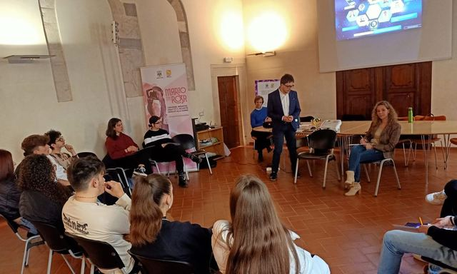
Masterclass 2023 – Primo seminario
Si è svolto sabato 11 marzo il primo degli otto seminari del programma MasterClass 2023 presso la Sala Rivera di Palazzo Fibbioni nel centro storico di L’Aquila. L’evento, patrocinato dal Comune dell’Aquila…
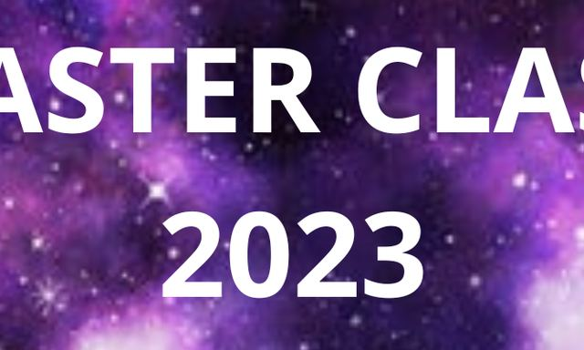
Masterclass 2023 – Presentazione
Fornire ai giovani una visione innovativa sulle opportunità e le eccellenze offerte dall’Abruzzo, nonostante le difficoltà oggettive e le condizioni spesso svantaggiate rispetto alle grandi metropoli europee…
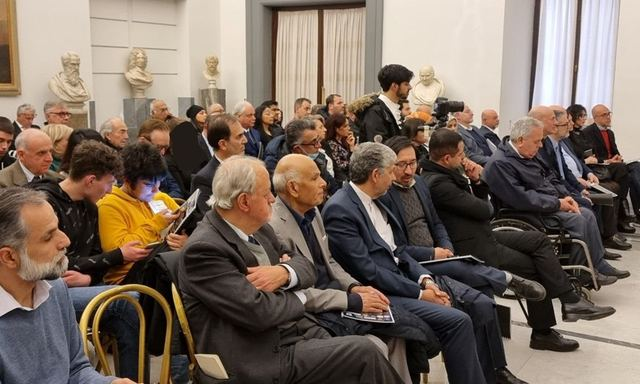
Concorso giornalistico in memoria del Dott. Mohamed Alì Zaraket
Il giorno 10 febbraio si è svolta la prima edizione del Concorso Giornalistico in memoria del Dott. Mohamed Alì Zaraket, eminente medico libanese operante in Italia, recentemente deceduto a Roma. Il concorso…
Intervista al Presidente dell’ Associazione 3:33 Dr. Mirko Rocci.
Quando è stata costituita la vostra Associazione e qual è l’origineed il signficato del peculiare nome 3:33? L’Associazione Culturale Residenti nei Centri Storici è stata fondata lo scorso mese 9 novembre. La…